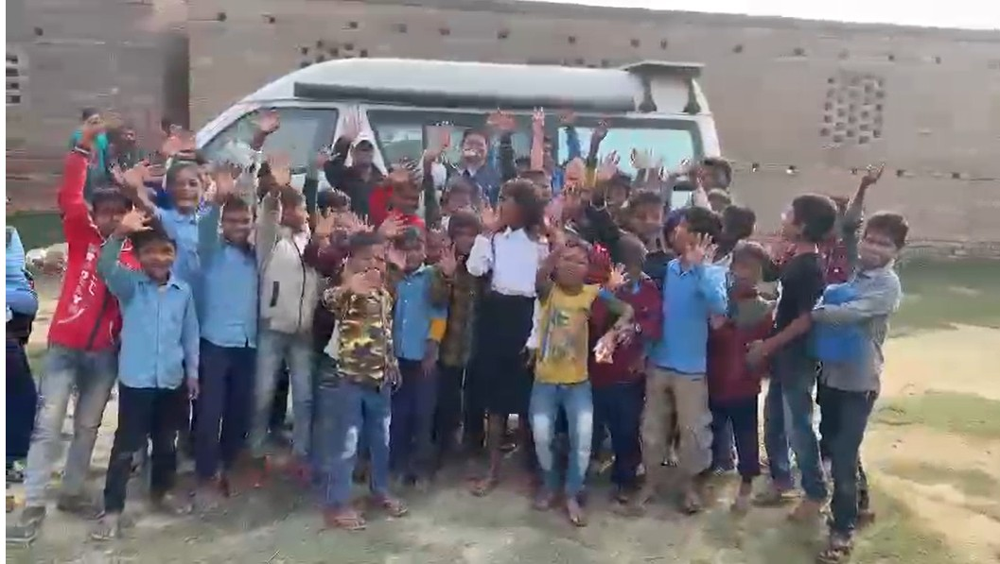

Real Story · 中文
去 Nepal 的路上，一次偶然停车变成了一场笑声。
02/12/2023，我正在前往 Nepal 的路上。 那天原本只是普通赶路的一天。
途中，我看到一些小孩在 stream / longkang 附近玩滑沙。 那个画面太自然、太快乐了，所以我把车停在路边，想拍一点 video 和照片。
结果，就因为这个小小的停下，我遇见了一所就在 Sugauli Road 边上的 primary school。
学校的 headmaster 从另一边看到我，向我挥手，邀请我过去看看。 于是，我就把 Toyotaki 开进学校里面。
接下来发生的，是一场完全没有预料到的快乐。
老师们、headmaster、还有一大群兴奋的 school kids，全都围了上来。 大家一起拍照、一起笑、一起看这台从远方来的 campervan。 原本只是一个临时停靠，突然变成一个充满笑声的小小庆典。
那种快乐很单纯。 不是因为有什么特别安排，也不是因为谁准备了节目。 只是因为一个陌生人停下车，一群孩子愿意笑，一所学校愿意打开门。
在那一刻，我很清楚地感觉到： 路上真正珍贵的，不只是大风景，也不是 famous place。 而是这种完全没有计划，却会把人心照亮的相遇。
English Memory Summary
A schoolyard full of unexpected joy.
On 02/12/2023, while travelling toward Nepal, Tuzi noticed a group of children playing on a sand slide near a stream by Sugauli Road. She pulled over to take some photos and videos.
From across the road, the headmaster of a nearby primary school saw her and waved, inviting her to visit the school. Tuzi drove Toyotaki onto the school grounds.
What followed was a warm and spontaneous encounter. Teachers, the headmaster, and many excited children gathered around, laughing, posing for photos, and enjoying the moment together.
What began as a simple roadside stop became a memory of joy, hospitality, and the bright energy of children who turned an ordinary day into something unforgettable.
Supplementary Media
The schoolyard that suddenly started waving.
This short clip preserves the joyful moment when the school children, teachers, and headmaster gathered around Toyotaki. What began as a roadside stop became a bright memory on the way to Nepal.
Heart Statement
有些快乐不是安排出来的。
它只是刚好发生。
那天我只是停下来，想拍几个在路边玩耍的小孩。 结果，一次招手、一所学校、一群笑着围上来的孩子， 把一段普通的赶路，变成了一颗很亮的记忆。
Some joy is not planned. It simply happens.